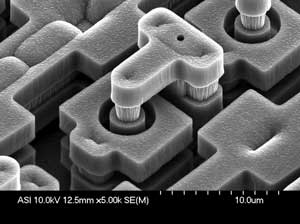
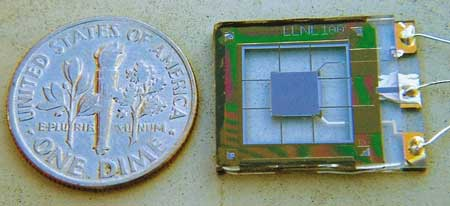
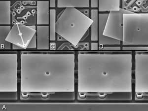
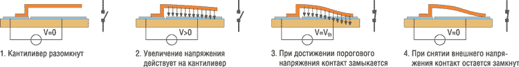
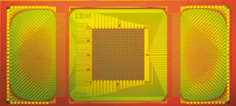

Алексей Борзенко
Многие из существующих инноваций не используют в полной мере свой потенциал вплоть до появления на рынке принципиально новых разработок. Так, одной из ключевых технологий вплоть до 2012 г. аналитическая компания Gartner называет технологию микроэлектромеханических систем - MEMS (Micro-Electro Mechanical Systems). Согласно последним прогнозам In-Stat/MDR, рынок MEMS растет на 13,2% каждый год. Кстати, эту отрасль ИТ-индустрии в Японии называют микромашинами (Micromachines), а в Европе - микросистемными технологиями (Micro System Technology). По мнению аналитиков из Gartner, микроэлектромеханические системы позволят с минимальными затратами повысить чувствительность и механическую отдачу устройств на уровне кристаллов.
Можно сказать, что MEMS - это множество микроустройств самой разнообразной конструкции и назначения, в производстве которых используются модифицированные технологические приемы микроэлектроники. Действительно, микроэлектромеханические системы получаются путем комбинирования механических элементов, датчиков и электроники на общем кремниевом основании посредством технологий микропроизводства. Все элементы могут быть реализованы в виде единого изделия, причем сразу десятками или сотнями, как микросхемы на кремниевой пластине. В основе этого лежит апробированная традиционная технология производства полупроводниковых интегральных микросхем. MEMS уже используются в нишевых приложениях, таких, как пассивные фильтры высокой частоты в терминалах беспроводной и сотовой связи, системы подвижных зеркал для мультимедийных проекторов, микрофоны. Число этих ниш и их размер растет сообразно рыночным потребностям.
В истории развития MEMS-технологии, по мнению ведущих современных специалистов, можно выделить четыре уже пройденных этапа. На первом непродолжительном этапе - исследовательском (с середины 50-х до начала 60-х годов прошлого столетия) основные усилия к формированию облика будущей технологии приложили как научные подразделения крупных компаний (в первую очередь знаменитая Bell Laboratories), так и собственно промышленные компании и академическая наука. Специфика этого периода заключается в том, что главное внимание уделялось востребованным во времена холодной войны технологиям двойного назначения, прежде всего созданию точных и дешевых датчиков различных типов (проектирование перспективных реактивных боевых самолетов, например, требовало значительного числа экспериментов), пригодных к массовому производству. Неудивительно, что второй этап развития технологии связывают исключительно с мощными промышленными (точнее, с военно-промышленными) компаниями: такие гранды, как Fairchild, Westinghouse, Honeywell, спешили коммерциализовать первые экспериментальные наработки. На коммерциализацию ушло довольно много времени, и только к началу 70-х годов академическая наука стала получать целевое финансирование от промышленности для решения задач сокращения стоимости и расширения областей применения MEMS-устройств. Еще через десять лет этот этап также был преодолен - и наступила пора микромашинного производства. Можно считать, что с конца девяностых годов прошлого века началась микромеханическая эпоха.
Многие эксперты, включая специалистов одной из ведущих фирм в этой области - Integrated Sensing Systems (http://www.mems-issys.com), - полагают, что MEMS-технология привносит буквально революционные изменения в каждую область применения путем совмещения микроэлектроники на основе кремния с микромеханической технологией, что позволяет реализовать систему на одном кристалле SoC (Systems-on-a-Chip). Так, технология MEMS дала новый импульс развитию систем инерциальной навигации и интегрированных систем, открыв путь к разработке "умных" изделий, увеличив вычислительные способности микродатчиков и расширив возможности дизайна таких систем.
Сегодня MEMS-устройства применяются практически повсюду. Это могут быть миниатюрные детали (гидравлические и пневмоклапаны, струйные сопла принтера, пружины для подвески головки винчестера), микроинструменты (скальпели и пинцеты для работы с объектами микронных размеров), микромашины (моторы, насосы, турбины величиной с горошину), микророботы, микродатчики и исполнительные устройства, аналитические микролаборатории (на одном кристалле) и т. д.
Базовые понятия
Вообще говоря, микросистема предполагает интеграцию ряда различных технологий (MEMS, КМОП, оптической, гидравлической и т. д.) в одном модуле. Например, технологии изготовления MEMS-устройств для СВЧ-применений (катушки индуктивности, варакторы, коммутаторы, резонаторы) подразумевают традиционные технологические циклы изготовления интегральных схем, адаптированные для создания трехмерных механических структур (это, например, объемная микрообработка, поверхностная микрообработка и так называемая технология LIGA).
Кремниевая объемная микрообработка включает технологию глубинного объемного травления. При таком процессе объемная структура получается внутри подложки благодаря ее анизотропным свойствам, т. е. различной скорости травления кристалла в зависимости от направления кристаллографических осей. Объемную структуру можно получить и методом наращивания, когда несколько подложек сплавляются и образуют вертикальные связи на атомарном уровне.
При поверхностной микромеханической обработке трехмерная структура образуется за счет последовательного наложения основных тонких пленок и удаления вспомогательных слоев в соответствии с требуемой топологией. Преимущество данной технологии - возможность многократного удаления (растворения) вспомогательных слоев без повреждения взаимосвязей базовых слоев. А главная ее особенность состоит в том, что она совместима с полупроводниковой технологией, поскольку для микрообработки используется обычная КМОП-технология.
Название технологии LIGA происходит от немецкой аббревиатуры Roentgen Lithography Galvanik Abformung, что означает комбинацию рентгеновской литографии, гальванотехники и прессовки (формовки). Здесь толстый фоторезистивный слой подвергается воздействию рентгеновских лучей (засветке) с последующим гальваническим осаждением высокопрофильных трехмерных структур. Сущность процесса заключается в использовании рентгеновского излучения от синхротрона для получения глубоких, с отвесными стенками топологических картин в полимерном материале. Излучение синхротрона имеет сверхмалый угол расходимости пучка. Источником излучения служат высокоэнергетические электроны (с энергией более 1 ГэВ), движущиеся с релятивистскими скоростями. Глубина проникновения излучения достигает нескольких миллиметров. Это обуславливает высокую эффективность экспонирования при малых временных затратах. Считается, что данная технология обеспечивает наилучшее отношение воспроизводимой ширины канала к его длине (при минимальных размерах).
Важнейшая составная часть большинства MEMS - микроактюатор (рис. 1). Обычно данное устройство преобразует энергию в управляемое движение. Размеры микроактюаторов могут довольно сильно варьироваться. Диапазон применения этих устройств чрезвычайно широк и при этом постоянно растет. Так, микроактюаторы используются в робототехнике, в управляющих устройствах, в космической области, в биомедицине, дозиметрии, в измерительных приборах, в технологии развлечения, в автомобилестроении и в домашнем хозяйстве. Например, микроактюаторы нужны для управления резонансными датчиками (они генерируют и передают им резонансную частоту), для управления режущими инструментами в микрохирургии. Это могут быть также различные микродвигатели, которые используются для управления микрореле, микрозеркалами и микрозажимами. Микроактюатором может быть даже микроэлектродное устройство для возбуждения мускульных тканей в неврологических протезах.
|  | Рис. 1. Микроактюатор в MEMS.
|
Все методы активации (движение, деформация, приведение в действие) в таких устройствах кратко можно свести к следующим: электростатический, магнитный, пьезоэлектрический, гидравлический и тепловой. При оценке использования того или иного метода часто применяют законы пропорционального уменьшения размеров. Наиболее перспективными методами считаются пьезоэлектрический и гидравлический, хотя и другие имеют большое значение. Электростатическая активация применяется примерно в одной трети микроактюаторов, и это, вероятно, наиболее общий и хорошо разработанный метод; главные его недостатки - износ и слипание. Магнитные микроактюаторы обычно требуют относительно большого электрического тока, также на микроскопическом уровне. При использовании электростатических методов активации получаемый выходной сигнал на относительную единицу размерности лучше, чем при использовании магнитных методов. Иными словами, при одном и том же размере электростатическое устройство выдает несколько лучший выходной сигнал. Тепловые микроактюаторы тоже потребляют относительно много электрической энергии; главный их недостаток состоит в том, что генерируемое тепло приходится рассеивать.
Для оценки микроактюаторов используют такие критерии качества, как линейность, точность, погрешность, повторяемость, разрешение, гистерезис, пороговое значение, люфт, шум, сдвиг, несущая способность, амплитуда, чувствительность, скорость, переходная характеристика, масштабируемость, выход по энергии.
Датчики и микроактюаторы
Фактически понадобилось более 30 лет на то, чтобы появилось первое коммерческое приложение MEMS. Одной из первых MEMS-технологий, получивших повсеместное распространение, стали датчики ускорения (акселерометры), устанавливаемые сейчас практически во все современные автомобили для детектирования столкновения и выпуска защитных воздушных подушек (SRS). Известная корпорация Analog Devices (http://www.analog.com), изготовившая первые такие сенсоры в 1993 г., сейчас продает автомобилестроителям десятки миллионов так называемых iMEMS-акселерометров в год.
Один из типичных современных MEMS-акселерометров состоит из взаимно блокирующих штырей, которые поочередно перемещаются и фиксируются. Изменение ускорения отражается на емкости структуры, которую легко измерить. Элементы могут размещаться подобно гребням в случае линейных акселерометров или в виде ступицы колеса в случае вращающегося акселерометра. Вращающиеся акселерометры могут служить для расширения возможностей антиблокировочных систем автомобиля (ABS), так как они способны зафиксировать фактическое перемещение автомобиля, а не только блокировку колес.
Акселерометры воздушных мешков рассматриваются как один из лучших примеров MEMS-датчиков, предоставляющих изготовителям автомобилей одновременно выигрыш в стоимости и характеристиках. Подходит время, когда то же самое можно будет сказать относительно приборов контроля давления в шинах, которые в настоящее время интегрируются в серийно выпускаемые модели в ответ на закон по обеспечению безопасности. Однако существует еще одна область, где MEMS могут способствовать внедрению электроники в автомобиль - это защита от боковых ударов при аварии. Эксперты полагают, что это может внести большой вклад в продажи MEMS, если правительство США примет более жесткие стандарты для защиты от бокового удара при аварии. Специалисты Агентства обеспечения безопасности движения NHTSA считают, что подобные меры позволят спасти до тысячи жизней в год.
В накопителях на жестких дисках вращающиеся акселерометры могут использоваться для обнаружения ротационных перемещений, влияющих на позиционирование головки и способных привести к потере дорожки. Компенсация ротационных перемещений используется обычно в дорогих моделях дисководов, поскольку при затратах чуть большего времени на чтение и запись значительно меньше его требуется на восстановление позиционирования головки после удара.
Сотрудники Sandia National Laboratories разработали образец датчика, который может обнаруживать перемещение в менее чем 1 нм (рис. 2). Основная часть прибора представляет собой решетку, изготовленную из двух перекрывающихся гребенок (поперечный размер 50 мкм): одна неподвижная, другая прикреплена к пружине. Расстояние между зубцами гребенки составляет от 600 до 900 нм, что сопоставимо с длиной волны видимого света. Даже при незначительном перемещении прибора подвижная гребенка совершает колебания, расширяя или сужая решетку, образованную пересекающимися зубцами. Изменение зазоров решетки влияет на ее оптические свойства, и лазерный луч, отражаясь от перекрывающихся зубцов, будет заметно ярким или тусклым. Считается возможным использовать такой детектор как основу навигационного прибора, который сможет работать независимо от спутниковой сети глобальной системы позиционирования.
|  | Рис. 2. Датчик MEMS.
|
Традиционно системы позиционирования на базе движения страдают от накопления мелких ошибок. С течением времени эти ошибки могут привести к показаниям, отклоняющимся на мили от действительного положения. Позиционное фиксирование, характерное для прибора Sandia, обеспечивает гораздо более медленную деградацию характеристик. Кроме того, прибор может работать под водой и в туннеле, куда GPS-сигнал не проходит. В настоящее время ведется работа над созданием портативной версии прибора для того, чтобы его можно было передать другим исследователям для проведения экспериментов. Прибор на базе указанной конструкции может поступить на рынок через три-пять лет.
Самый маленький датчикВ прошлом году Национальный институт стандартов и технологии США объявил о создании миниатюрного магнитного датчика, который может обнаруживать изменения магнитного поля порядка 50 пТ (это в миллионы раз слабее магнитного поля Земли). Прибор размером с рисовое зерно примерно в 100 раз меньше, чем современные датчики с аналогичной чувствительностью. Новый магнитный датчик можно изготовить и собрать с использованием существующих технологий микроэлектроники и MEMS. Новый магнетометр способен обнаруживать запрятанное оружие на расстоянии 12 м или стальную трубу диаметром 150 мм под землей на глубине 35 м. Датчик работает на принципе обнаружения незначительных изменений уровней энергии электронов в условиях магнитного поля. Миниатюрный рубидиевый элемент нагревается в герметичной прозрачной ячейке до образования пара рубидия. Луч полупроводникового лазера пропускается через атомный пар. При наличии магнитного поля некоторое количество лазерного излучения абсорбируется атомами, и это обнаруживается фотоэлементом. Большие магнитные поля вызывают пропорционально большие изменения уровней атомной энергии и изменяют поглощение атома.
|
Микроактюаторы, работа которых основана на обратном эффекте (прикладываемое напряжение вызывает небольшие перемещения кремниевых структур), сегодня используются, например, для точной подстройки магнитных головок. Последние обычно отвечают за обнаружение сигналов в накопителях на магнитных дисках. При этом существенно повышается плотность информации "дорожка на дюйм", или tpi (track per inch), а следовательно, и емкость самого накопителя.
Есть и еще целый ряд успешных MEMS-изделий, таких, как головки микроструйных принтеров, гироскопы, датчики давления, которые сотнями миллионов поставляются медицинской и автомобильной промышленности. Назовем еще цифровые проекторы высокого разрешения, построенные на основе MEMS-массивов микрозеркал. За последние годы удалось достичь заметных успехов в изготовлении моторов, насосов и зажимов, сенсоров давления и смещения - множества самых разных по назначению механических агрегатов, настолько малых, что их не видно невооруженным глазом. Но обо всем по порядку.
Нанодатчики в космосеВ совместном проекте NASA и корпорации Aerospace планируется создать "черный ящик", в котором будут использованы нанодатчики массой несколько граммов. Подобные устройства будут служить для сбора данных о входе космических объектов в земную атмосферу из космоса. После прохождения опасного скоростного участка и входа в плотные слои атмосферы черный ящик будет "звонить домой" и передавать данные с использованием спутника до посадки на землю или водную поверхность. Для сравнения: "черный ящик" промышленной авиации аналогичного назначения (REBR) весит около 2,2 фунта. NASA намечает опытные испытания REBR осенью 2006 г. на борту невозвращаемой ракеты Delta II. Если испытания пройдут успешно, планируется использовать нанотехнику в экспедициях на Луну и Марс. Нанодатчики могут быть упакованы в маленькие сферы, которые будут использоваться на космическом корабле Crew Exploration Vehicle (CEV), разрабатываемом для замены "челнока". Как объявил президент Буш, демонстрационный полет CEV состоится в 2008 г., а пилотируемый полет - в 2014 г. Нанотехника способна послужить для выполнения контрольных функций на борту. Зонды могут использоваться как разведывательные устройства, которые выбирают места посадки для космического корабля, или для ориентирования корабля на незнакомой территории. Радиосигналы с нанозондов позволят экипажу знать, где он находится. Нанотехника может также сыграть роль в полетах, использующих "аэрозахват", или при входе в незнакомую атмосферу. В технике аэрозахвата планетарная атмосфера используется для изменения скорости корабля. Космический корабль делает глубокий "прыжок" в атмосферу для установления орбиты без использования топлива. Этот метод позволит уменьшить типовую массу межпланетного космического корабля наполовину, позволяя задействовать меньшие, менее дорогие транспортные средства. Разведывательный зонд может двигаться впереди космического корабля и предоставлять данные о давлении и плотности атмосферы, определяя полетный коридор с устойчивым положением корабля и уменьшением степени риска при выполнении миссии аэрозахвата.
|
DMD для DLP
Лежащая в основе любого проектора DLP (Digital Light Processing) технология цифровой обработки света базируется на разработках корпорации Texas Instruments (http://www.ti.com), создавшей новый тип формирователя изображения на основе MEMS. Еще в 1987 г. изобретенное Ларри Хорнбеком (Larry J. Hornbeck) цифровое мультизеркальное устройство DMD (Digital Micromirror Device) завершило десятилетние исследования Texas Instruments в области микромеханических деформируемых зеркальных устройств. Суть открытия состояла в отказе от гибких зеркал в пользу матрицы жестких зеркал, имеющих всего два устойчивых положения. DMD-кристалл - это матрица высокой точности, осуществляющая цифровое преобразование света (рис. 3).
|  | Рис. 3. Современная разработка DMD-матрицы.
|
DMD-кристалл по сути представляет собой полупроводниковую микросхему статической оперативной памяти (SRAM), каждая ячейка которой (точнее, ее содержимое) определяет положение одного из множества (от нескольких сотен тысяч до миллиона и более) размещенных на поверхности подложки микрозеркал размером 16х16 мкм. Как и управляющая ячейка памяти, микрозеркало имеет два состояния, отличающихся направлением поворота зеркальной плоскости вокруг оси, проходящей по диагонали зеркала.
С помощью массива микроскопических зеркал формируется луч, причем каждое такое зеркало соответствует одному пикселу света в проецируемом изображении. В сочетании с цифровым сигналом, источником света и проекционным объективом эти зеркала обеспечивают самое высокое качество воспроизведения видео и графических изображений.
Электромеханическая память
Сегодня и припомнить-то трудно, сколько было разных идей по поводу того, что использовать для запоминающих устройств. А компания Cavendish Kinetics (http://www.cavendish-kinetics.com) предложила еще один подход к созданию энергонезависимых запоминающих устройств. В основе ее подхода лежат микроэлектронные механические системы с возможностью интеграции в КМОП-процессы. Память Cavendish Kinetics может выпускаться в двух вариантах, с возможностью однократной записи и со способностью перезаписи.
Как полагает компания, ее технология, названная Nanomech, обладает самым низким энергопотреблением среди встраиваемых типов памяти, а по скорости работы сравнима с флэш-памятью. Название Nanomech иллюстрирует ее принцип действия (рис. 4). Запоминающая ячейка представляет собой проводящую (металлическую) пластину - кантиливер (микроэлектромеханический актюатор), закрепленный над контактом. Если между контактным электродом и пластиной создать разность потенциалов, пластина изогнется и коснется контакта, в результате чего электрическое сопротивление упадет практически до нуля. Что любопытно, этот эффект обладает гистерезисом, так как после касания пластинки контакта происходит "залипание" - для разрыва контакта необходима дополнительная энергия. Таким образом, возможно создать память типа ПЗУ, в которую что-либо записать можно лишь однажды. Для перезаписи над пластинкой достаточно поставить дополнительный электрод, приложив к которому потенциал можно разомкнуть контакт.
|  |
| Рис. 4. Принцип работы технологии Nanomech.
|
Действующие прототипы были созданы по КМОП-технологии с учетом проектных норм 0,35 мкм, однако компания уверяет, что такие ячейки памяти можно создавать при соблюдении проектных норм 45 нм. К преимуществам нового типа памяти следует отнести и то, что ток в режиме ожидания отсутствует, а для записи требуется затратить механическую энергию величиной всего 25 пкДж. Устройство остается работоспособным даже при температуре 200 град., при этом количество циклов записи-перезаписи может достигать 20 млн.
На CeBIT'2005 IBM продемонстрировала накопитель, обеспечивающий плотность записи данных свыше 19,2 Гбайт на 1 см2. Специалисты утверждают, что этот прототип микроэлектромеханической системы MEMS способен записать на площади размером с почтовую марку информацию, примерно эквивалентную емкости 25 DVD-дисков. Сотрудники IBM ласково назвали свое устройство Millipede ("многоножка"), потому что у него тысячи очень мелких кремниевых шипов, которые могут "прошивать" рисунок из отдельных битов в тонкой полимерной пленке (рис. 5).
|  | Рис. 5. MEMS-память Millipede.
|
Вообще говоря, технологию "многоножек" предложил несколько лет назад нобелевский лауреат Герд Бинниг, автор сканирующего туннельного микроскопа и сотрудник исследовательского института IBM. Он обратил внимание на способность микроскопа формировать в полимерах ямки наноразмера, наличие которых в определенных точках вещества можно трактовать как единичное значение бита. Бинниг, стараясь приспособить свое открытие к нуждам промышленности, научился одновременно сканировать множество подобных ямок. Таким образом, принцип работы Millipede напоминает всем хорошо известные перфокарты. Ключевым элементом новой технологии служит массив V-образных кремниевых кронштейнов (cantilever), на конце каждого из которых находится миниатюрная микронная игла. Данные записываются на носители, представляющие собой очень тонкий слой полимерного материала на кремниевой подложке. Наконечник каждого V-образного кронштейна с размещенной на нем иглой одновременно служит зоной повышенного сопротивления. При пропускании через него импульса электрического тока игла разогревается до температуры, превышающей температуру плавления полимера, и "выплавляет" в носителе воронку диаметром около 10 нм. Когда ток прерывается, игла остывает, а полимер затвердевает. Для считывания данных замеряют сопротивление "рабочей части" кронштейна. В этом случае игла также разогревается, но только до меньшей температуры, при которой полимер, используемый в носителе, еще не размягчается. Поверхность носителя сканируется, и при попадании иглы в воронку интенсивность теплоотвода от нее резко увеличивается, температура уменьшается, в результате сопротивление изменяется скачкообразно, за счет чего и фиксируется бит информации.
Возможность многократной записи обеспечивается особенностями вязкоупругих свойств полимерных систем. Дело в том, что в области воронки-бита полимер находится в так называемом метастабильном состоянии, из которого его можно вывести неким внешним воздействием, например, с помощью все того же разогрева до определенной температуры. Выполняется это путем прохода нагретой иглы над воронкой, после чего последняя исчезает, т. е. данные стираются. По заявлению специалистов IBM, на сегодняшний день им удалось достичь долговечности носителя, превышающей 100 тыс. циклов перезаписи.
Управление массивом игольчатых кронштейнов в Millipede осуществляется с помощью электронных цепей с временным мультиплексированием - подобно тому, как это делается в микросхемах DRAM. Перемещение носителя вдоль массива и его точное позиционирование обеспечиваются электромагнитным приводом. IBM утверждает, что Millipede подходит для мобильных устройств: цифровых камер, мобильных телефонов и USB-карт. Однако пока речь идет только о лабораторном образце, а до выхода на рынок Millipede дозреет года через два, не раньше.
Как отмечает аналитическая компания NanoMarkets в своем отчете по рынку памяти, сегмент энергонезависимой памяти к 2011 г. будет оцениваться в 65,7 млрд долл. При этом в понятие "энергонезависимой памяти" компания включила MRAM, FRAM, голографическую память, а также MEMS-разработки, выполненные с использованием новых технологий. По оценкам специалистов, рыночные доли типов энергонезависимой памяти, именуемых в обзоре Nanostorage (устройства хранения, выполненные с использованием микротехнологий), могут составить 40% как в секторе обычной памяти, так и в секторе дисковых устройств.
"Электромеханика" в телекоммуникациях
Одной из самых перспективных областей внедрения MEMS многие эксперты в настоящее время считают рынок телекоммуникаций. Еще в конце 2000 г. от Национальной лаборатории Sandia (http://www.sandia.gov), принадлежащей министерству энергетики США, отпочковалась частная компания MEMX (http://www.memx.com), занимающаяся вопросами коммерческого применения создаваемых в лаборатории MEMS-технологий. Компания сфокусировалась в своей деятельности на оптических коммутаторах для оптоволоконных телекоммуникационных систем. В их основу положена фирменная технология Sandia под названием SUMMiT V (от Sandia Ultraplanar Multilevel MEMS Technology). Это микромашинный процесс обработки поверхности кристалла напылением и травлением, охватывающий пять независимых слоев поликристаллического кремния - четыре "механических" слоя для построения механизмов и один электрический для обеспечения межсоединений всей системы. Технология позволяет доводить размеры механических элементов до 1 мкм.
Что же касается одного из электронных гигантов - корпорации Intel (http://www.intel.com), то решение о развитии технологий MEMS было принято ею еще в 1999 г. На весеннем Форуме Intel для разработчиков в 2002 г. было не только официально заявлено об интересе к микроэлектромеханическим устройствам, но и провозглашена стратегическая важность этого направления. Учитывая потенциал корпорации как в сфере разработок, так и в производстве, значение этого заявления для рынка MEMS переоценить было трудно. Примерно в это же время на заводе Intel Fab 8 была внедрена микроэлектромеханическая технология, позволяющая формировать внутри или на поверхности полупроводниковых кристаллов крошечные механические устройства - датчики, клапаны, шестерни, зеркала, исполнительные элементы. Для Intel MEMS это скорее микроэлектронные механические системы - микроскопические механические компоненты для устройств, которые отличаются пониженным энергопотреблением и сверхкомпактными конструктивными характеристиками и выполняют вычислительные и коммуникационные функции. Корпорация ведет исследования возможных применений этих технологий в антеннах, экранах, настраиваемых фильтрах, конденсаторах, индукторах и микрокоммутаторах.
Весной 2004 г. Intel начала предлагать своим партнерам для интеграции в сотовые телефоны радиочастотные front-end-модули, построенные по технологии MEMS. В подобный модуль интегрировано около 40 пассивных элементов, что позволяет сэкономить до двух третей пространства в сотовом телефоне. Количество и состав модулей зависят от нужд заказчиков, которым предлагается использовать такие MEMS-модули для миниатюризации пассивных фильтров, резистивных и емкостных цепей. В будущем в аналогичные модули планируется интегрировать низкоскоростные коммутаторы, а в перспективе, возможно, высокочастотные коммутаторы передачи/приема и фильтры на поверхностных акустических волнах SAW (Surface Acoustic Wave). Существующие дискретные SAW-фильтры хотя и довольно громоздки в сравнении с интегральными микросхемами, однако показатель качества фильтрации у них выше примерно на два порядка. К тому же, если размер SAW-фильтров измеряется в сантиметрах, то MEMS-резонаторов на 1 см2 площади можно разместить несколько десятков тысяч штук. Нынешнее поколение MEMS-модулей производится на фабрике Intel Fab 8 в Израиле на 200-мм пластинах с учетом проектных норм 0,25 и 0,35 мкм.
На последней конференции по интегральным схемам ISSCC'2005 были отмечены большие возможности рынка ВЧ-фильтров преселектора. Ученые из Мичиганского университета отметили, что такие фильтры найдут применение в телефонах для выбора нужного ВЧ-канала и устройствах ВЧ будущих поколений, где MEMS предоставляют решение с фактором качества Q выше 10 000, что значительно лучше показателя обычных керамических фильтров. Их коллеги из Texas Instruments, в свою очередь, сообщили о том, что MEMS ВЧ-фильтры можно использовать в малошумящих усилителях. Проблемой остается то, что MEMS-приборы дороги и их внедрение на промышленный рынок пока довольно затруднительно. Представитель фирмы XCom Wireless, выпускающей подсистемы на базе MEMS-реле и варакторов, считает перспективным их использование в программируемых радиоустройствах, а также в радиолокационных станциях с фазированными антенными решетками на спутниках.
Перспективы MEMS-дисплеев
По сообщению агентства DigiTimes, тайваньский производитель небольших панелей компания Prime View International (PVI) установила долгосрочные стратегические отношения с американской компанией Qualcomm MEMS Technologies (QMT, http://www.qualcomm.com). Основная область сотрудничества - разработка коммерческих решений на базе iMod-дисплеев, которые планирует выпускать QMT.
Вообще говоря, технология iMod Display основана на микроэлектронных механических системах MEMS и предпочтительна пока для мобильных устройств. Экран хорошо отображает информацию даже под прямым воздействием яркого солнечного света. Как заявляют представители Qualcomm, сегодня решены и многие проблемы, касающиеся энергопотребления. На ближайшие два года, в соответствии с подписанным контрактом, PVI заявлена как основной производитель подобных дисплеев. Руководители компаний оптимистично высказываются о развитии продвигаемой технологии. Ведь, помимо улучшения вышеназванных технических характеристик, решены и некоторые проблемы производственного процесса. Технология такова, что нет никакой необходимости в добавлении в панель ламп подсветки и цветовых фильтров. Интересно, что эти экраны будут даже тоньше TFT ЖК-панелей.
Стоит отметить, что используемое ныне ноу-хау QMT приобрела вместе с компанией Iridigm в сентябре 2004 г. Вообще говоря, идея данной технологии заключается в том, чтобы формировать цветные изображения методом интерференции световых волн - точно так же, как это происходит, к примеру, в крыльях бабочки или перьях павлина. Из сказанного выше сразу вытекает первое достоинство разработки Iridigm, состоящее в том, что она изначально не предполагала использования красителей. Именно поэтому дисплеи на ее основе со временем не должны утратить яркость и цветовую насыщенность. Ключевым элементом технологии, получившей в то время название iMoD Matrix, выступает интерференционный модулятор iMoD (Interference Modulator). Он представляет собой образец микроэлектромеханической MEMS-системы и состоит из полупрозрачной пленки на стеклянной подложке, способной частично отражать, а частично пропускать свет, и гибкой металлической мембраны. Последняя может находиться в двух состояниях: в первом случае между ней и пленкой есть воздушный зазор, во втором - нет. Переход из одного состояния в другое осуществляется за счет электростатического взаимодействия в результате приложения внешнего напряжения различной полярности, причем после его снятия мембрана сохраняет новую конфигурацию.
Когда пленка и мембрана разделены воздушным зазором, световые волны, отразившиеся от пленки, интерферируют с волнами, прошедшими сквозь нее и затем отразившимися от мембраны, в результате чего выделяется излучение определенного цвета. Если же зазор отсутствует, то никакой интерференции не происходит. Варьируя величину зазора, можно получить три основных цвета: при наибольшей толщине воздушной прослойки - красный, при средней - зеленый и при наименьшей - синий. Размеры одного интерференционного модулятора составляют всего десятки микрон. Один пиксел в дисплее на основе iMoD Matrix состоит из трех субпикселов - красного, зеленого и синего, каждый из которых образован несколькими рядами модуляторов. При этом управляющие схемы располагаются по краям дисплея.
В числе достоинств предлагаемого решения, помимо хорошего качества изображения, специалисты отмечают и очень малый уровень энергопотребления, что в случае коммерческой реализации технологии может сделать ее оптимальным выбором для разнообразных мобильных устройств. Хотя вопрос об объемах производства еще обсуждается, PVI уже разослала выпущенные прототипы будущих устройств компаниям-партнерам, работающим в сфере мобильных телефонов, смартфонов и портативных компьютеров. Чем быстрее технология будет принята для маленьких и средних экранов, тем скорее она может появиться и в более крупных устройствах, таких, как телевизионные панели.
MEMS-источники питания для портативных устройств
Одно из новых и перспективных направлений - использование MEMS для создания топливных элементов и генераторов питания, которые предназначаются для портативных электронных приборов будущих поколений (CD-проигрыватели, цифровые камеры, персональные цифровые секретари). Достаточно сказать, что по этой теме на конференции IEEE в феврале прошлого года было представлено более 200 докладов.
Корпорация Toshiba (http://www.toshiba.co.jp) выпускает топливный элемент с прямым использованием метанола на базе MEMS емкостью 140 см3, с выходной мощностью 1 Вт, рассчитанный на 20 ч работы. Микронасос был разработан для подкачки газов и жидкостей и для поддержания потребляемой мощности и размеров в приемлемых пределах. В конструкции используется полимерный мембранный электролитический узел с катодом и анодом для выполнения функций топливного элемента. Каждый электрод имеет каталитический и газодиффузионный слой. Размеры устройства примерно соответствуют габаритам обычного сотового телефона.
Большой интерес вызвала совместная разработка мощного генератора питания усилиями разработчиков Технологических институтов штатов Массачусетс и Джорджия. Эта технология основана на микромеханической MEMS-структуре с использованием постоянного магнита. Генераторы представляют собой трехфазные, осевые, синхронные машины. При этом каждый из них состоит из многополюсного статора с поверхностной намоткой и ротора на базе постоянного магнита. Микромеханические витки с малыми зазорами между проводниками и с геометрией переменной ширины служат ключевыми элементами, обеспечивающими высокую плотность мощности. При скорости вращения 120 тысяч об./мин генератор продемонстрировал преобразование механической энергии в электрическую на уровне 2,6 Вт. Связанный с трансформатором и выпрямителем генератор обеспечивает на постоянном токе мощность 1,1 Вт на резистивной нагрузке. Для случая активной машины с габаритными размерами 9,5 мм (внешний диаметр), 5,5 мм (внутренний диаметр), 2,3 мм (толщина) это соответствует мощности 10 МВт/м3. Разработчики полагают, что такого рода MEMS-генераторы могут обеспечить мощность от 10 до 100 Вт. Они также считают, что генерирование электрической мощности на данном уровне создает предпосылки для создания масштабируемых устройств с использованием постоянных магнитов для практических применений. Подобные электрические генераторы могут приводиться в действие различными первичными источниками, включая поток жидкости, сжатый газ или небольшие двигатели внутреннего сгорания, например, газовые турбины микронных размеров.
Разработчики из Массачусетского технологического института совместно с Линкольновской лабораторией создали электроквазистатический индукционный турбинный электрогенератор. При саморезонирующем возбуждении была достигнута выходная мощность 192 МВт. Генератор состоит из пяти кремниевых слоев, сплавленных при 700 град. Статор представляет собой структуру из оксидноплатинового электрода, сформированного на углубленном островке оксида, а ротор - это тонкая пленка из слаболегированного поликремния, расположенного также на островке оксида. Генерирование мощности ограничивается внутренними и внешними емкостями, поэтому для достижения более высоких уровней мощности необходимо моделирование.
Новый подход, предложенный сотрудниками Калифорнийского технологического института, заключается в использовании MEMS-матриц жидкостных роторных электретных генераторов питания. Эти устройства представляют собой конденсаторы статического заряда, покрытые тефлоном, с зазорами, заполненными воздухом и жидкими капельками, которые перемещаются при вибрации. При перемещении жидкости между зазороми на конденсаторе генерируется результирующее напряжение, в то время как зеркальный заряд перераспределяется на электроде в соответствии с положением капелек.
MEMS также перспективны для выпуска инструментов в помощь созданию миниатюрных топливных элементов и каталитических химических микрореакторов. Один из инструментов представляет собой пассивный микрорегулятор для контроля потока газа в миниатюрных топливных элементах. Первая такая разработка выполнена совместно корпорацией Сanon и Токийским университетом.